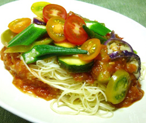

夏野菜の冷製パスタ
- 調理時間：30 分
- （一人当たり）
- カロリー：474kcal
- たんぱく質：14.8g
- 脂質：8.8g
- 塩分：1.9g


＜２人分＞
- カッペリーニ
- 180g
- ミニトマト
- 1パック
- アスパラガス
- 1本
- ナス
- 1/2本
- オクラ
- ３本
トマトソース
- ・トマト
- 300g
- ・玉ねぎ
- 1/2個
- ・ニンニク
- 1片
- ・塩、コショウ
- 各少々
- ・オリーブオイル
- 大さじ1
- ・ローリエ
- 1～2枚


- トマトソースをつくる
①トマトはざく切りにする。玉ねぎはみじん切りにする。ニンニクは皮をむいて包丁の背でつぶす。
②フライパンにオリーブオイルとニンニクをいれて熱し、香りがでたら玉ねぎを加えて炒める。
③火が通ったら、トマトを加えて煮詰める。塩、コショウで味をととのえる。 -
オクラ、アスパラガス、ナスはサッと下茹でし、食べやすい大きさに切る。
ミニトマトは薄切りにする。 - 大きめの鍋に湯を沸かし、塩を加える。カッペリーニを投入し、ゆであがればすぐに冷水にさらす。
- 水気を切ったカッペリーニをお皿に盛り付け、トマトソース、野菜各種を盛り付け、トマトソースを添えて完成。
夏野菜の冷製パスタ
暑い日が続き食欲が落ちがちな季節です。そんな時期のお料理は、酸味をきかせたり、香辛料を利用したり、口当たりのよい食材を合わせることがポイントです。
冷たい麺は夏の救世主になります。具たくさんに盛り付けて食欲減退対策を！
夏野菜はカリウムが豊富で利尿作用が多く、体のほてりを冷まします。また、野菜や果物の水分はビタミンやミネラルを含みますから、お食事からも上手に水分補給ができるでしょう。水分の取りにくいお年寄りや発汗量の多い子どもたちにもオススメです。カラフルに夏らしい一皿に仕上げましょう。